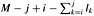

|
|
< Day Day Up > |
|
Suppose that we are designing a program to translate text from English to French. For each occurrence of each English word in the text, we need to look up its French equivalent. One way to perform these lookup operations is to build a binary search tree with n English words as keys and French equivalents as satellite data. Because we will search the tree for each individual word in the text, we want the total time spent searching to be as low as possible. We could ensure an O(lg n) search time per occurrence by using a red-black tree or any other balanced binary search tree. Words appear with different frequencies, however, and it may be the case that a frequently used word such as "the" appears far from the root while a rarely used word such as "mycophagist" appears near the root. Such an organization would slow down the translation, since the number of nodes visited when searching for a key in a binary search tree is one plus the depth of the node containing the key. We want words that occur frequently in the text to be placed nearer the root.[5] Moreover, there may be words in the text for which there is no French translation, and such words might not appear in the binary search tree at all. How do we organize a binary search tree so as to minimize the number of nodes visited in all searches, given that we know how often each word occurs?
What we need is known as an optimal binary search tree. Formally, we are given a sequence K = 〈k1, k2, ..., kn〉 of n distinct keys in sorted order (so that k1 < k2 < ··· < kn), and we wish to build a binary search tree from these keys. For each key ki, we have a probability pi that a search will be for ki. Some searches may be for values not in K, and so we also have n + 1 "dummy keys" d0, d1, d2, ..., dn representing values not in K. In particular, d0 represents all values less than k1, dn represents all values greater than kn, and for i = 1, 2, ..., n -1, the dummy key di represents all values between ki and ki+1. For each dummy key di, we have a probability qi that a search will correspond to di. Figure 15.7 shows two binary search trees for a set of n = 5 keys. Each key ki is an internal node, and each dummy key di is a leaf. Every search is either successful (finding some key ki) or unsuccessful (finding some dummy key di), and so we have
|
i |
0 |
1 |
2 |
3 |
4 |
5 |
|---|---|---|---|---|---|---|
|
|
||||||
|
pi |
0.15 |
0.10 |
0.05 |
0.10 |
0.20 |
|
|
qi |
0.05 |
0.10 |
0.05 |
0.05 |
0.05 |
0.10 |
(a) A binary search tree with expected search cost 2.80. (b) A binary search tree with expected search cost 2.75. This tree is optimal.
Because we have probabilities of searches for each key and each dummy key, we can determine the expected cost of a search in a given binary search tree T. Let us assume that the actual cost of a search is the number of nodes examined, i.e., the depth of the node found by the search in T, plus 1. Then the expected cost of a search in T is
where depthT denotes a node's depth in the tree T. The last equality follows from equation (15.15). In Figure 15.7(a), we can calculate the expected search cost node by node:
|
node |
depth |
probability |
contribution |
|---|---|---|---|
|
|
|||
|
k1 |
1 |
0.15 |
0.30 |
|
k2 |
0 |
0.10 |
0.10 |
|
k3 |
2 |
0.05 |
0.15 |
|
k4 |
1 |
0.10 |
0.20 |
|
k5 |
2 |
0.20 |
0.60 |
|
d0 |
2 |
0.05 |
0.15 |
|
d1 |
2 |
0.10 |
0.30 |
|
d2 |
3 |
0.05 |
0.20 |
|
d3 |
3 |
0.05 |
0.20 |
|
d4 |
3 |
0.05 |
0.20 |
|
d5 |
3 |
0.10 |
0.40 |
|
|
|||
|
Total |
2.80 |
||
For a given set of probabilities, our goal is to construct a binary search tree whose expected search cost is smallest. We call such a tree an optimal binary search tree. Figure 15.7(b) shows an optimal binary search tree for the probabilities given in the figure caption; its expected cost is 2.75. This example shows that an optimal binary search tree is not necessarily a tree whose overall height is smallest. Nor can we necessarily construct an optimal binary search tree by always putting the key with the greatest probability at the root. Here, key k5 has the greatest search probability of any key, yet the root of the optimal binary search tree shown is k2. (The lowest expected cost of any binary search tree with k5 at the root is 2.85.)
As with matrix-chain multiplication, exhaustive checking of all possibilities fails to yield an efficient algorithm. We can label the nodes of any n-node binary tree with the keys k1, k2, ..., kn to construct a binary search tree, and then add in the dummy keys as leaves. In Problem 12-4, we saw that the number of binary trees with n nodes is Ω(4n/n3/2), and so there are an exponential number of binary search trees that we would have to examine in an exhaustive search. Not surprisingly, we will solve this problem with dynamic programming.
To characterize the optimal substructure of optimal binary search trees, we start with an observation about subtrees. Consider any subtree of a binary search tree. It must contain keys in a contiguous range ki, ..., kj, for some 1 ≤ i ≤ j ≤ n. In addition, a subtree that contains keys ki, ..., kj must also have as its leaves the dummy keys di-1, ..., dj.
Now we can state the optimal substructure: if an optimal binary search tree T has a subtree T′ containing keys ki, ..., kj, then this subtree T′ must be optimal as well for the subproblem with keys ki, ..., kj and dummy keys di-1, ..., dj. The usual cut-and-paste argument applies. If there were a subtree T" whose expected cost is lower than that of T′, then we could cut T′ out of T and paste in T", resulting in a binary search tree of lower expected cost than T, thus contradicting the optimality of T.
We need to use the optimal substructure to show that we can construct an optimal solution to the problem from optimal solutions to subproblems. Given keys ki, ..., kj, one of these keys, say kr (i ≤ r ≤ j), will be the root of an optimal subtree containing these keys. The left subtree of the root kr will contain the keys ki, ..., kr-1 (and dummy keys di-1, ..., dr-1), and the right subtree will contain the keys kr+1, ..., kj (and dummy keys dr, ..., dj). As long as we examine all candidate roots kr, where i ≤ r ≤ j, and we determine all optimal binary search trees containing ki, ..., kr-1 and those containing kr+1, ..., kj, we are guaranteed that we will find an optimal binary search tree.
There is one detail worth noting about "empty" subtrees. Suppose that in a subtree with keys ki, ..., kj, we select ki as the root. By the above argument, ki's left subtree contains the keys ki, ..., ki-1. It is natural to interpret this sequence as containing no keys. Bear in mind, however, that subtrees also contain dummy keys. We adopt the convention that a subtree containing keys ki, ..., ki-1 has no actual keys but does contain the single dummy key di-1. Symmetrically, if we select kj as the root, then kj's right subtree contains the keys kj +1, ..., kj; this right subtree contains no actual keys, but it does contain the dummy key dj.
We are ready to define the value of an optimal solution recursively. We pick our subproblem domain as finding an optimal binary search tree containing the keys ki, ..., kj, where i ≥ 1, j ≤ n, and j ≥ i - 1. (It is when j = i - 1 that there are no actual keys; we have just the dummy key di-1.) Let us define e[i, j] as the expected cost of searching an optimal binary search tree containing the keys ki, ..., kj. Ultimately, we wish to compute e[1, n].
The easy case occurs when j = i - 1. Then we have just the dummy key di-1. The expected search cost is e[i, i - 1] = qi-1.
When j ≥ i, we need to select a root kr from among ki, ..., kj and then make an optimal binary search tree with keys ki, ..., kr-1 its left subtree and an optimal binary search tree with keys kr+1, ..., kj its right subtree. What happens to the expected search cost of a subtree when it becomes a subtree of a node? The depth of each node in the subtree increases by 1. By equation (15.16), the expected search cost of this subtree increases by the sum of all the probabilities in the subtree. For a subtree with keys ki, ..., kj, let us denote this sum of probabilities as
Thus, if kr is the root of an optimal subtree containing keys ki, ..., kj, we have
e[i, j ] = pr + (e[i, r - 1] + w(i, r - 1)) + (e[r + 1, j] + w(r + 1, j)).
Noting that
w(i, j) = w(i, r - 1) + pr + w(r + 1, j),
we rewrite e[i, j] as
The recursive equation (15.18) assumes that we know which node kr to use as the root. We choose the root that gives the lowest expected search cost, giving us our final recursive formulation:
The e[i, j] values give the expected search costs in optimal binary search trees. To help us keep track of the structure of optimal binary search trees, we define root[i, j], for 1 ≤ i ≤ j ≤ n, to be the index r for which kr is the root of an optimal binary search tree containing keys ki, ..., kj. Although we will see how to compute the values of root[i, j], we leave the construction of the optimal binary search tree from these values as Exercise 15.5-1.
At this point, you may have noticed some similarities between our characterizations of optimal binary search trees and matrix-chain multiplication. For both problem domains, our subproblems consist of contiguous index subranges. A direct, recursive implementation of equation (15.19) would be as inefficient as a direct, recursive matrix-chain multiplication algorithm. Instead, we store the e[i, j] values in a table e[1 ‥ n + 1, 0 ‥ n]. The first index needs to run to n + 1 rather than n because in order to have a subtree containing only the dummy key dn, we will need to compute and store e[n + 1, n]. The second index needs to start from 0 because in order to have a subtree containing only the dummy key d0, we will need to compute and store e[1, 0]. We will use only the entries e[i, j] for which j ≥ i - 1. We also use a table root[i, j], for recording the root of the subtree containing keys ki, ..., kj. This table uses only the entries for which 1 ≤ i ≤ j ≤ n.
We will need one other table for efficiency. Rather than compute the value of w(i, j) from scratch every time we are computing e[i, j]-which would take Θ(j - i) additions-we store these values in a table w[1 ‥ n + 1, 0 ‥ n]. For the base case, we compute w[i, i - 1] = qi-1 for 1 ≤ i ≤ n. For j ≥ i, we compute
Thus, we can compute the Θ(n2) values of w[i, j] in Θ(1) time each.
The pseudocode that follows takes as inputs the probabilities p1, ..., pn and q0, ..., qn and the size n, and it returns the tables e and root.
OPTIMAL-BST(p, q, n) 1 for i ← 1 to n + 1 2 do e[i, i - 1] ← qi-1 3 w[i, i - 1] ← qi-1 4 for l ← 1 to n 5 do for i ← 1 to n - l + 1 6 do j ← i + l - 1 7 e[i, j] ← ∞ 8 w[i, j] ← w[i, j - 1] + pj + qj 9 for r ← i to j 10 do t ← e[i, r - 1] + e[r + 1, j] + w[i, j] 11 if t < e[i, j] 12 then e[i, j] ← t 13 root[i, j] ← r 14 return e and root
From the description above and the similarity to the MATRIX-CHAIN-ORDER procedure in Section 15.2, the operation of this procedure should be fairly straightforward. The for loop of lines 1-3 initializes the values of e[i, i - 1] and w[i, i - 1]. The for loop of lines 4-13 then uses the recurrences (15.19) and (15.20) to compute e[i, j] and w[i, j] for all 1 ≤ i ≤ j ≤ n. In the first iteration, when l = 1, the loop computes e[i, i] and w[i, i] for i = 1, 2, ..., n. The second iteration, with l = 2, computes e[i, i + 1] and w[i, i +1] for i = 1, 2, ..., n - 1, and so forth. The innermost for loop, in lines 9-13, tries each candidate index r to determine which key kr to use as the root of an optimal binary search tree containing keys ki, ..., kj. This for loop saves the current value of the index r in root[i, j] whenever it finds a better key to use as the root.
Figure 15.8 shows the tables e[i, j], w[i, j], and root[i, j] computed by the procedure OPTIMAL-BST on the key distribution shown in Figure 15.7. As in the matrix-chain multiplication example, the tables are rotated to make the diagonals run horizontally. OPTIMAL-BST computes the rows from bottom to top and from left to right within each row.
The OPTIMAL-BST procedure takes Θ(n3) time, just like MATRIX-CHAIN-ORDER. It is easy to see that the running time is O(n3), since its for loops are nested three deep and each loop index takes on at most n values. The loop indices in OPTIMAL-BST do not have exactly the same bounds as those in MATRIX-CHAIN-ORDER, but they are within at most 1 in all directions. Thus, like MATRIX-CHAIN-ORDER, the OPTIMAL-BST procedure takes Ω(n3) time.
Write pseudocode for the procedure CONSTRUCT-OPTIMAL-BST(root) which, given the table root, outputs the structure of an optimal binary search tree. For the example in Figure 15.8, your procedure should print out the structure
k2 is the root
k1 is the left child of k2
d0 is the left child of k1
d1 is the right child of k1
k5 is the right child of k2
k4 is the left child of k5
k3 is the left child of k4
d2 is the left child of k3
d3 is the right child of k3
d4 is the right child of k4
d5 is the right child of k5
corresponding to the optimal binary search tree shown in Figure 15.7(b).
Determine the cost and structure of an optimal binary search tree for a set of n = 7 keys with the following probabilities:
|
i |
0 |
1 |
2 |
3 |
4 |
5 |
6 |
7 |
|---|---|---|---|---|---|---|---|---|
|
|
||||||||
|
pi |
0.04 |
0.06 |
0.08 |
0.02 |
0.10 |
0.12 |
0.14 |
|
|
qi |
0.06 |
0.06 |
0.06 |
0.06 |
0.05 |
0.05 |
0.05 |
0.05 |
Suppose that instead of maintaining the table w[i, j], we computed the value of w(i, j) directly from equation (15.17) in line 8 of OPTIMAL-BST and used this computed value in line 10. How would this change affect the asymptotic running time of OPTIMAL-BST?
Knuth [184] has shown that there are always roots of optimal subtrees such that root[i, j - 1] ≤ root[i, j] ≤ root[i + 1, j] for all 1 ≤ i < j ≤ n. Use this fact to modify the OPTIMAL-BST procedure to run in Θ(n2) time.
The euclidean traveling-salesman problem is the problem of determining the shortest closed tour that connects a given set of n points in the plane. Figure 15.9(a) shows the solution to a 7-point problem. The general problem is NP-complete, and its solution is therefore believed to require more than polynomial time (see Chapter 34).
J. L. Bentley has suggested that we simplify the problem by restricting our attention to bitonic tours, that is, tours that start at the leftmost point, go strictly left to right to the rightmost point, and then go strictly right to left back to the starting point. Figure 15.9(b) shows the shortest bitonic tour of the same 7 points. In this case, a polynomial-time algorithm is possible.
Describe an O(n2)-time algorithm for determining an optimal bitonic tour. You may assume that no two points have the same x-coordinate. (Hint: Scan left to right, maintaining optimal possibilities for the two parts of the tour.)
Consider the problem of neatly printing a paragraph on a printer. The input text is a sequence of n words of lengths l1, l2, ..., ln, measured in characters. We want to print this paragraph neatly on a number of lines that hold a maximum of M characters each. Our criterion of "neatness" is as follows. If a given line contains words i through j, where i ≤ j, and we leave exactly one space between words, the number of extra space characters at the end of the line is , which must be nonnegative so that the words fit on the line. We wish to minimize the sum, over all lines except the last, of the cubes of the numbers of extra space characters at the ends of lines. Give a dynamic-programming algorithm to print a paragraph of n words neatly on a printer. Analyze the running time and space requirements of your algorithm.
In order to transform one source string of text x[1 ‥ m] to a target string y[1 ‥ n], we can perform various transformation operations. Our goal is, given x and y, to produce a series of transformations that change x to y. We use an array z-assumed to be large enough to hold all the characters it will need-to hold the intermediate results. Initially, z is empty, and at termination, we should have z[j] = y[j] for j = 1, 2, ..., n. We maintain current indices i into x and j into z, and the operations are allowed to alter z and these indices. Initially, i = j = 1. We are required to examine every character in x during the transformation, which means that at the end of the sequence of transformation operations, we must have i = m + 1.
There are six transformation operations:
Copy a character from x to z by setting z[j] ← x[i] and then incrementing both i and j. This operation examines x[i].
Replace a character from x by another character c, by setting z[j] ← c, and then incrementing both i and j. This operation examines x[i].
Delete a character from x by incrementing i but leaving j alone. This operation examines x[i].
Insert the character c into z by setting z[j] ← c and then incrementing j, but leaving i alone. This operation examines no characters of x.
Twiddle (i.e., exchange) the next two characters by copying them from x to z but in the opposite order; we do so by setting z[j] ← x[i + 1] and z[j + 1] ← x[i] and then setting i ← i + 2 and j ← j + 2. This operation examines x[i] and x[i + 1].
Kill the remainder of x by setting i ← m + 1. This operation examines all characters in x that have not yet been examined. If this operation is performed, it must be the final operation.
As an example, one way to transform the source string algorithm to the target string altruistic is to use the following sequence of operations, where the underlined characters are x[i] and z[j] after the operation:
|
Operation |
x |
z |
|---|---|---|
|
|
||
|
initial strings |
algorithm |
_ |
|
copy |
algorithm |
a_ |
|
copy |
algorithm |
al_ |
|
replace by t |
algorithm |
alt_ |
|
delete |
algorithm |
alt_ |
|
copy |
algorithm |
altr_ |
|
insert u |
algorithm |
altru_ |
|
insert i |
algorithm |
altrui_ |
|
insert s |
algorithm |
altruis_ |
|
twiddle |
algorithm |
altruisti_ |
|
insert c |
algorithm |
altruistic_ |
|
kill |
algorithm_ |
altruistic_ |
Note that there are several other sequences of transformation operations that transform algorithm to altruistic.
Each of the transformation operations has an associated cost. The cost of an operation depends on the specific application, but we assume that each operation's cost is a constant that is known to us. We also assume that the individual costs of the copy and replace operations are less than the combined costs of the delete and insert operations; otherwise, the copy and replace operations would not be used. The cost of a given sequence of transformation operations is the sum of the costs of the individual operations in the sequence. For the sequence above, the cost of transforming algorithm to altruistic is
(3 · cost(copy)) + cost(replace) + cost(delete) + (4 · cost(insert)) + cost(twiddle) + cost(kill).
Given two sequences x[1 ‥ m] and y[1 ‥ n] and set of transformation-operation costs, the edit distance from x to y is the cost of the least expensive operation sequence that transforms x to y. Describe a dynamic-programming algorithm that finds the edit distance from x[1 ‥ m] to y[1 ‥ n] and prints an optimal operation sequence. Analyze the running time and space requirements of your algorithm.
The edit-distance problem is a generalization of the problem of aligning two DNA sequences (see, for example, Setubal and Meidanis [272, Section 3.2]). There are several methods for measuring the similarity of two DNA sequences by aligning them. One such method to align two sequences x and y consists of inserting spaces at arbitrary locations in the two sequences (including at either end) so that the resulting sequences x′ and y′ have the same length but do not have a space in the same position (i.e., for no position j are both x′[j] and y′[j] a space.) Then we assign a "score" to each position. Position j receives a score as follows:
+1 if x′[j] = y′[j] and neither is a space,
-1 if x′[j] ≠ y′[j] and neither is a space,
-2 if either x′[j] or y′[j] is a space.
The score for the alignment is the sum of the scores of the individual positions. For example, given the sequences x = GATCGGCAT and y = CAATGTGAATC, one alignment is
G ATCG GCAT CAAT GTGAATC -*++*+*+-++*
A + under a position indicates a score of +1 for that position, a - indicates a score of -1, and a ⋆ indicates a score of -2, so that this alignment has a total score of 6 · 1 - 2 · 1 - 4 · 2 _ -4.
Explain how to cast the problem of finding an optimal alignment as an edit distance problem using a subset of the transformation operations copy, replace, delete, insert, twiddle, and kill.
Professor Stewart is consulting for the president of a corporation that is planning a company party. The company has a hierarchical structure; that is, the supervisor relation forms a tree rooted at the president. The personnel office has ranked each employee with a conviviality rating, which is a real number. In order to make the party fun for all attendees, the president does not want both an employee and his or her immediate supervisor to attend.
Professor Stewart is given the tree that describes the structure of the corporation, using the left-child, right-sibling representation described in Section 10.4. Each node of the tree holds, in addition to the pointers, the name of an employee and that employee's conviviality ranking. Describe an algorithm to make up a guest list that maximizes the sum of the conviviality ratings of the guests. Analyze the running time of your algorithm.
We can use dynamic programming on a directed graph G = (V, E) for speech recognition. Each edge (u, v) ∈ E is labeled with a sound σ(u, v) from a finite set Σ of sounds. The labeled graph is a formal model of a person speaking a restricted language. Each path in the graph starting from a distinguished vertex v0 ∈ V corresponds to a possible sequence of sounds produced by the model. The label of a directed path is defined to be the concatenation of the labels of the edges on that path.
Describe an efficient algorithm that, given an edge-labeled graph G with distinguished vertex v0 and a sequence s = 〈σ1, σ2, ..., σk〉 of characters from Σ, returns a path in G that begins at v0 and has s as its label, if any such path exists. Otherwise, the algorithm should return NO-SUCH-PATH. Analyze the running time of your algorithm. (Hint: You may find concepts from Chapter 22 useful.)
Now, suppose that every edge (u, v) ∈ E has also been given an associated nonnegative probability p(u, v) of traversing the edge (u, v) from vertex u and thus producing the corresponding sound. The sum of the probabilities of the edges leaving any vertex equals 1. The probability of a path is defined to be the product of the probabilities of its edges. We can view the probability of a path beginning at v0 as the probability that a "random walk" beginning at v0 will follow the specified path, where the choice of which edge to take at a vertex u is made probabilistically according to the probabilities of the available edges leaving u.
Extend your answer to part (a) so that if a path is returned, it is a most probable path starting at v0 and having label s. Analyze the running time of your algorithm.
Suppose that you are given an n × n checkerboard and a checker. You must move the checker from the bottom edge of the board to the top edge of the board according to the following rule. At each step you may move the checker to one of three squares:
the square immediately above,
the square that is one up and one to the left (but only if the checker is not already in the leftmost column),
the square that is one up and one to the right (but only if the checker is not already in the rightmost column).
Each time you move from square x to square y, you receive p(x, y) dollars. You are given p(x, y) for all pairs (x, y) for which a move from x to y is legal. Do not assume that p(x, y) is positive.
Give an algorithm that figures out the set of moves that will move the checker from somewhere along the bottom edge to somewhere along the top edge while gathering as many dollars as possible. Your algorithm is free to pick any square along the bottom edge as a starting point and any square along the top edge as a destination in order to maximize the number of dollars gathered along the way. What is the running time of your algorithm?
Suppose you have one machine and a set of n jobs a1, a2, ..., an to process on that machine. Each job aj has a processing time tj, a profit pj, and a deadline dj. The machine can process only one job at a time, and job aj must run uninterruptedly for tj consecutive time units. If job aj is completed by its deadline dj, you receive a profit pj, but if it is completed after its deadline, you receive a profit of 0. Give an algorithm to find the schedule that obtains the maximum amount of profit, assuming that all processing times are integers between 1 and n. What is the running time of your algorithm?
[5]If the subject of the text is edible mushrooms, we might want "mycophagist" to appear near the root.
|
|
< Day Day Up > |
|